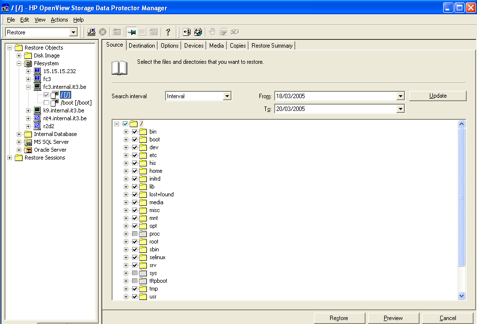
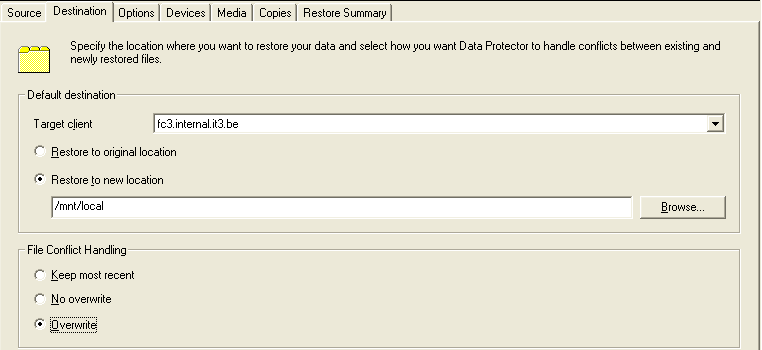
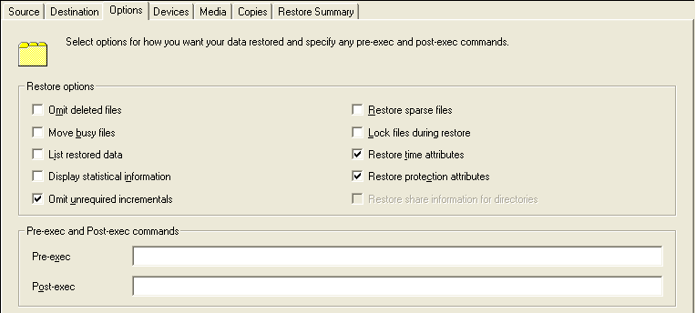
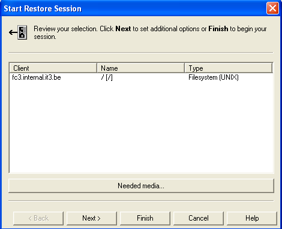

If you prefer to use Data Protector as backup storage instead of burning CD-ROMs or DVDs then you can configure mkCDrec to just generate a rescue CD-ROM with the needed executables to be able to restore from a booted rescue CD-ROM.
Therefore, edit the Config.sh file and define the following variables:
DP_RESTORE=”y”
DP_DATALIST_NAME=”the name of your datalist”
Thereafter run mkCDrec in rescue mode only as now you do not rely on mkCDrec to create a full backup!
make rescue
or
mkcdrec rescue
Burn the image on a CD-ROM and keep it safe for later usage.
Boot with the rescue CD-ROM and do the following:
cd /etc/recovery
./dp-restore.sh
and follow the instructions…
screendumps will follow
If you want to push the restore (for security reason for example or if the pull method failed for some reason) then use the Data Protector GUI when the dp-restore.sh gives you the chance.
What follows is an example restore via a Data Protector Manager GUI:

It is important that you restore into “/mnt/local” and select the “overwrite” button.

No additional options were selected.

Click next or finish to start the restore.

When the restore is finished type enter on your console window where you started the dp-restore.sh so it can finish the GRUB or LILO part.